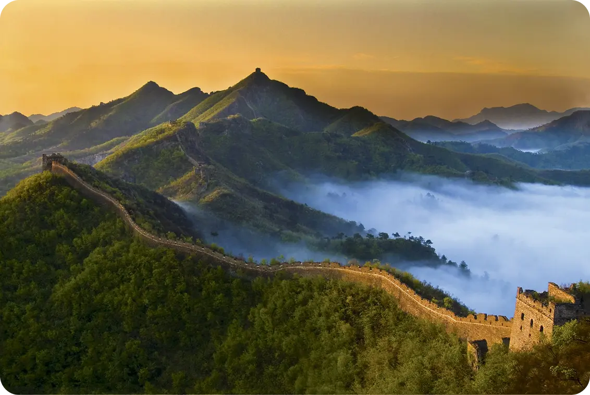
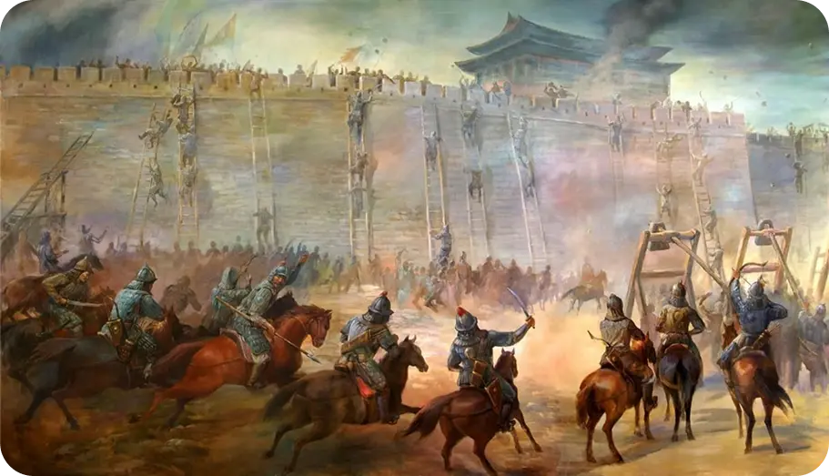
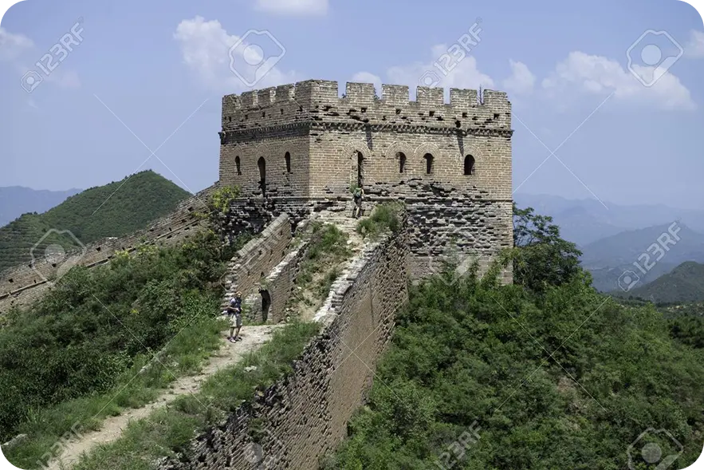

La gran muralla
La UNESCO nombró a la Gran Muralla como Patrimonio de la Humanidad en el año 1987. Treinta años más tarde, en 2007, la Muralla ganó el concurso público de las Siete Nuevas Maravillas del Mundo. Sin embargo, en la actualidad solo permanece en pie cerca de un tercio de lo que alguna vez fue la Gran Muralla.
Se ubica en el norte de China, limitando con el desierto de Gobi (Mongolia) y con Corea del Norte, para construirla, se empleó mano de obra esclava. Su construcción causó tantas muertes que ganó la fama de ser el mayor cementerio del mundo. El rumor rezaba que los restos mortales de los esclavos habían sido usados como material constructivo, pero las investigaciones han desmentido este mito.
Paleta de colores
Tonos terrosos, grises y marrones, derivados de piedra, ladrillo y tierra apisonada. Representan fortaleza y resistencia.
Símbolos representativos
Símbolo de la protección, unidad y la perseverancia del pueblo chino; representa la frontera y la defensa de la nación, además de conectar a las generaciones actuales con sus raíces históricas.
Se podría decir que es un recordatorio de la tenacidad del espíritu humano, debido a que estuvo presente en periodos de desafío en la historia de china.
Preferencias de diseño y estética visual
Diseño funcional y monumental, con torres de vigilancia y caminos elevados; transmite resistencia y grandeza a través de su inmensidad y simetría en el paisaje.
